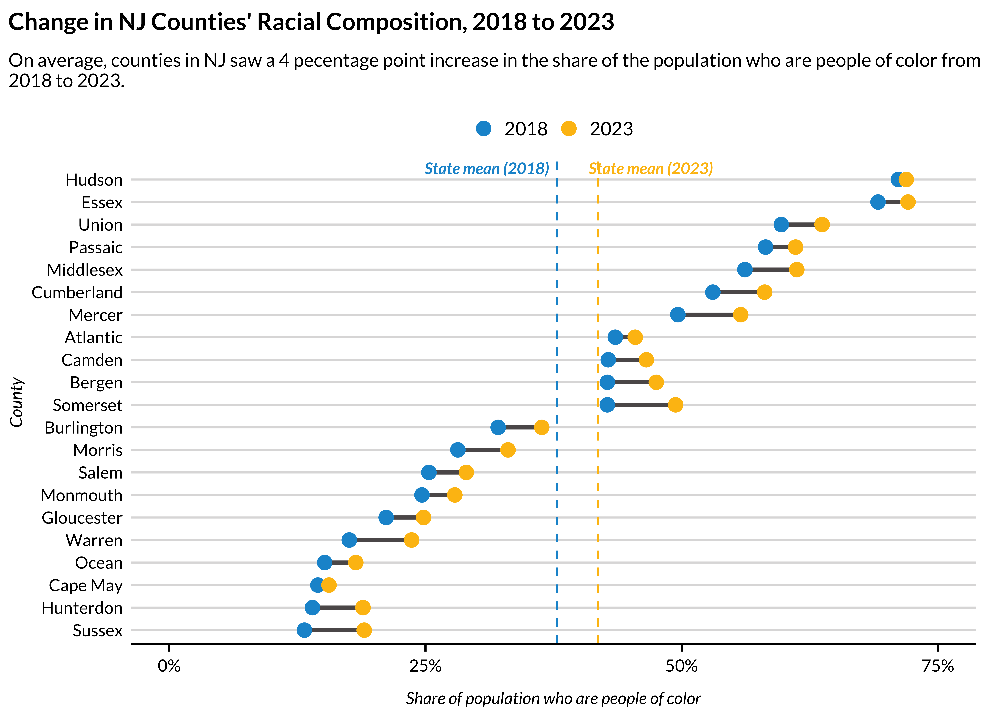

WARNING
This package is under active development. Some functions return results that are known to be incomplete or are completely untested. Other functions return results that are only partly tested. Coefficients of variation are a particularly new and untested feature that should not be relied on. Users should independently verify all results. Please open a new issue (or pull request) in response to any identified issues.
The goal of urbnindicators is to provide users with analysis-ready data from the American Community Survey (ACS).
Here’s what it offers now as compared to other solutions for working with ACS data:
Meaningful, consistent variable names.
Standardized variables, such as percentages, in addition to the raw count variables used to produce them.
A codebook that describes how each variable is calculated.
The built-in capacity to pull data for multiple years and multiple states.
Supplemental measures, such as population density, that aren’t available from the ACS.
Built-in quality checks to help ensure that calculated variables are accurate.
And there’s more in the works:
Even more indicators.
Coefficients of variation for all variables to help measure estimate reliability.
Checks for variable alignment over time.
Support for inter-decadal geographic alignment.
Installation
Install the development version of urbnindicators from GitHub with:
# install.packages("renv")
# renv::install("UI-Research/urbnindicators")This package is under active development with frequent updates–check to ensure you have the most recent version installed!
urbnindicators in action
# library(dplyr)
# library(tidyr)
# library(stringr)
# library(urbnindicators)
# library(ggplot2)
# library(urbnthemes)
# set_urbn_defaults(style = "print")
acs_df = compile_acs_data(
variables = NULL,
years = c(2017, 2022),
geography = "county",
states = "NJ",
counties = NULL,
spatial = FALSE) %>%
transmute(
county_name = NAME %>% str_remove(" County, New Jersey"),
race_personofcolor_percent,
data_source_year)
#> | | | 0% | | | 1% | |= | 1% | |= | 2% | |== | 2% | |=== | 4% | |==== | 6% | |===== | 7% | |====== | 8% | |====== | 9% | |======= | 9% | |======= | 10% | |======== | 11% | |========= | 12% | |========= | 13% | |========== | 14% | |========== | 15% | |=========== | 15% | |=========== | 16% | |============ | 17% | |============ | 18% | |============= | 18% | |============= | 19% | |============== | 19% | |============== | 20% | |============== | 21% | |=============== | 22% | |================ | 22% | |================ | 23% | |================ | 24% | |================= | 24% | |================= | 25% | |================== | 26% | |=================== | 27% | |=================== | 28% | |==================== | 28% | |==================== | 29% | |===================== | 30% | |===================== | 31% | |====================== | 31% | |====================== | 32% | |======================= | 32% | |======================= | 33% | |======================== | 34% | |======================== | 35% | |========================= | 35% | |========================= | 36% | |========================== | 36% | |========================== | 37% | |========================== | 38% | |=========================== | 38% | |=========================== | 39% | |============================ | 39% | |============================ | 40% | |============================ | 41% | |============================= | 41% | |============================= | 42% | |============================== | 42% | |============================== | 43% | |============================== | 44% | |=============================== | 44% | |=============================== | 45% | |================================ | 45% | |================================ | 46% | |================================= | 47% | |================================== | 48% | |===================================== | 53% | |===================================== | 54% | |====================================== | 54% | |====================================== | 55% | |======================================= | 55% | |======================================= | 56% | |======================================== | 57% | |======================================== | 58% | |========================================= | 58% | |========================================= | 59% | |========================================== | 59% | |========================================== | 60% | |========================================== | 61% | |=========================================== | 61% | |=========================================== | 62% | |============================================ | 62% | |============================================ | 63% | |============================================ | 64% | |============================================= | 64% | |============================================= | 65% | |============================================== | 65% | |============================================== | 66% | |=============================================== | 67% | |=============================================== | 68% | |================================================ | 68% | |================================================ | 69% | |=================================================== | 73% | |==================================================== | 74% | |==================================================== | 75% | |===================================================== | 75% | |===================================================== | 76% | |====================================================== | 77% | |====================================================== | 78% | |======================================================= | 78% | |======================================================= | 79% | |======================================================== | 79% | |======================================================== | 80% | |======================================================== | 81% | |========================================================= | 81% | |========================================================= | 82% | |========================================================== | 82% | |========================================================== | 83% | |=========================================================== | 84% | |=========================================================== | 85% | |============================================================ | 85% | |============================================================ | 86% | |============================================================= | 87% | |============================================================= | 88% | |============================================================== | 88% | |============================================================== | 89% | |=============================================================== | 89% | |=============================================================== | 90% | |=============================================================== | 91% | |================================================================ | 91% | |================================================================ | 92% | |================================================================= | 92% | |================================================================= | 93% | |================================================================= | 94% | |================================================================== | 94% | |================================================================== | 95% | |=================================================================== | 95% | |=================================================================== | 96% | |==================================================================== | 96% | |==================================================================== | 97% | |==================================================================== | 98% | |===================================================================== | 98% | |===================================================================== | 99% | |======================================================================| 99% | |======================================================================| 100%
#> | | | 0% | | | 1% | |= | 1% | |= | 2% | |== | 2% | |== | 3% | |=== | 4% | |=== | 5% | |==== | 5% | |==== | 6% | |===== | 6% | |===== | 7% | |===== | 8% | |====== | 8% | |====== | 9% | |======= | 9% | |======= | 10% | |======= | 11% | |======== | 11% | |======== | 12% | |========= | 12% | |========= | 13% | |========== | 14% | |========== | 15% | |=========== | 15% | |=========== | 16% | |============ | 17% | |============ | 18% | |============= | 18% | |============= | 19% | |============== | 19% | |============== | 20% | |============== | 21% | |=============== | 21% | |=============== | 22% | |================ | 22% | |================ | 23% | |================ | 24% | |================= | 24% | |================= | 25% | |================== | 25% | |================== | 26% | |=================== | 26% | |=================== | 27% | |=================== | 28% | |==================== | 28% | |==================== | 29% | |===================== | 29% | |===================== | 30% | |===================== | 31% | |====================== | 31% | |====================== | 32% | |======================= | 32% | |======================= | 33% | |======================= | 34% | |======================== | 34% | |======================== | 35% | |========================= | 35% | |========================= | 36% | |========================== | 37% | |========================== | 38% | |=========================== | 38% | |=========================== | 39% | |============================ | 39% | |============================ | 40% | |============================ | 41% | |============================= | 41% | |============================= | 42% | |============================== | 42% | |============================== | 43% | |=============================== | 44% | |=============================== | 45% | |================================ | 46% | |================================= | 46% | |================================= | 47% | |================================= | 48% | |================================== | 48% | |================================== | 49% | |=================================== | 49% | |=================================== | 50% | |==================================== | 51% | |==================================== | 52% | |===================================== | 52% | |===================================== | 53% | |===================================== | 54% | |====================================== | 54% | |====================================== | 55% | |======================================= | 55% | |======================================= | 56% | |======================================== | 57% | |======================================== | 58% | |========================================= | 58% | |========================================= | 59% | |========================================== | 59% | |========================================== | 60% | |========================================== | 61% | |=========================================== | 61% | |=========================================== | 62% | |============================================ | 62% | |============================================ | 63% | |============================================ | 64% | |============================================= | 64% | |============================================= | 65% | |============================================== | 65% | |============================================== | 66% | |=============================================== | 67% | |=============================================== | 68% | |================================================ | 68% | |================================================ | 69% | |================================================= | 70% | |================================================= | 71% | |================================================== | 71% | |================================================== | 72% | |========================================================== | 83% | |=========================================================== | 84% | |=========================================================== | 85% | |============================================================ | 85% | |============================================================ | 86% | |============================================================= | 87% | |============================================================= | 88% | |============================================================== | 88% | |============================================================== | 89% | |=============================================================== | 89% | |=============================================================== | 90% | |=============================================================== | 91% | |================================================================ | 91% | |================================================================ | 92% | |================================================================= | 92% | |================================================================= | 93% | |================================================================== | 94% | |================================================================== | 95% | |=================================================================== | 95% | |=================================================================== | 96% | |==================================================================== | 96% | |==================================================================== | 97% | |==================================================================== | 98% | |===================================================================== | 98% | |===================================================================== | 99% | |======================================================================| 100%
state_averages = acs_df %>%
group_by(data_source_year) %>%
summarize(mean_race_personofcolor_percent = mean(race_personofcolor_percent)) %>%
arrange(data_source_year) %>%
pull()
dumbbell_data = acs_df %>%
pivot_wider(
names_from = data_source_year,
values_from = race_personofcolor_percent,
names_prefix = "year_")
acs_df %>%
ggplot() +
geom_segment(
data = dumbbell_data,
aes(
x = reorder(county_name, year_2017),
y = year_2017,
yend = year_2022),
color = palette_urbn_main[7],
linewidth = 1) +
geom_point(
aes(
x = reorder(county_name, race_personofcolor_percent),
y = race_personofcolor_percent,
color = factor(data_source_year))) +
annotate(
"text",
y = .31,
x = 21.5,
label = "State mean (2017)",
fontface = "bold.italic",
color = palette_urbn_main[1]) +
annotate(
"text",
y = .47,
x = 21.5,
label = "State mean (2022)",
fontface = "bold.italic",
color = palette_urbn_main[2]) +
geom_hline(yintercept = state_averages[1], linetype = "dashed", color = palette_urbn_main[1]) +
geom_hline(yintercept = state_averages[2], linetype = "dashed", color = palette_urbn_main[2]) +
labs(
title = "Change in NJ Counties' Racial Composition, 2017 to 2022",
subtitle = paste0(
"On average, counties in NJ saw a ",
round((state_averages[2] - state_averages[1]), digits = 3) * 100,
" pecentage point increase in the share of the population who are people of color from 2017 to 2022.") %>%
str_wrap(120),
x = "County",
y = "Share of population who are people of color",
color = "Year") +
scale_x_discrete(expand = expansion(mult = c(.03, 0.04))) +
scale_y_continuous(
breaks = c(0, .25, .50, .75, 1.0),
limits = c(0, .75),
labels = scales::percent) +
coord_flip()